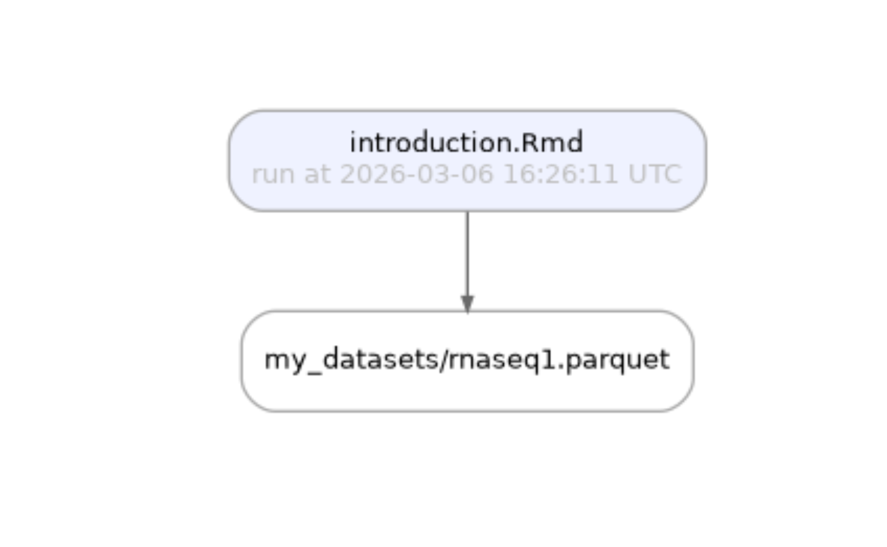
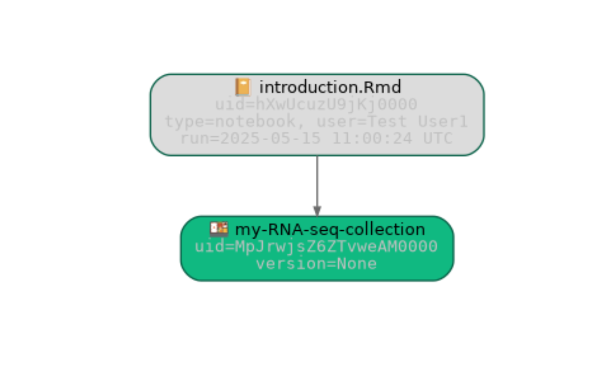

This vignette introduces the {laminr} workflow.
To learn more about LaminDB, see docs.lamin.ai.
Quickstart
For setup, install the {laminr} and lamindb packages and connect to a LaminDB instance.
install.packages("laminr", dependencies = TRUE) # install the laminr package from CRAN
laminr::install_lamindb(extra_packages = c("bionty")) # install lamindb & bionty for use via reticulate
laminr::lamin_login() # <-- you can skip this for local & self-hosted instances
laminr::lamin_connect("<account>/<instance>") # <-- replace with your instanceHere’s how to create a local instance.
laminr::lamin_init(storage = "./mydata", modules = c("bionty"))In an R session, transfer an scRNA-seq dataset from the laminlabs/cellxgene instance, compute marker genes with Seurat, and save results.
library(laminr)
ln <- import_module("lamindb") # instantiate the central object of the API
# Access inputs -------------------------------------------
ln$track() # track your run of a notebook or script
artifact <- ln$Artifact$using("laminlabs/cellxgene")$get("7dVluLROpalzEh8m") # query the artifact https://lamin.ai/laminlabs/cellxgene/artifact/7dVluLROpalzEh8m
adata <- artifact$load() # load the artifact into memory or sync to cache via filepath <- artifact$cache()
# Your transformation -------------------------------------
library(Seurat) # find marker genes with Seurat
seurat_obj <- CreateSeuratObject(counts = as(Matrix::t(adata$X), "CsparseMatrix"), meta.data = adata$obs)
seurat_obj[["RNA"]] <- AddMetaData(GetAssay(seurat_obj), adata$var)
Idents(seurat_obj) <- "cell_type"
seurat_obj <- NormalizeData(seurat_obj)
markers <- FindAllMarkers(seurat_obj, features = Features(seurat_obj)[1:100])
seurat_path <- tempfile(fileext = ".rds")
saveRDS(seurat_obj, seurat_path)
# Save outputs --------------------------------------------
ln$Artifact(seurat_path, key = "my-datasets/my-seurat-object.rds")$save() # save versioned output
ln$Artifact$from_df(markers, key = "my-datasets/my-markers.parquet")$save() # save versioned output
ln$finish() # finish the run, save source code & run reportIf you did not use RStudio’s notebook mode, create an html export and then run the following.
laminr::lamin_save("my-analyis.Rmd") # save source code and html report for a `.qmd` or `.Rmd` fileTrack notebooks & scripts
See https://docs.lamin.ai/introduction#track-notebooks-scripts
library(laminr)
lamin_init(storage = "./laminr-intro", modules = c("bionty"))
library(laminr)
ln <- import_module("lamindb") # instantiate the central `ln` object of the API
#> → connected lamindb: testuser1/laminr-intro-20250502130420
ln$track() # track a run of your notebook or script
#> → created Transform('ikvGgbdP1mzV0000'), started new Run('QePKUiBz...') at 2025-05-02 13:04:42 UTC
ln$Transform$df()
#> uid key description type source_code hash
#> 1 ikvGgbdP1mzV0000 introduction.Rmd introduction.Rmd notebook <NA> <NA>
#> reference reference_type space_id _template_id version is_latest
#> 1 <NA> <NA> 1 <NA> <NA> TRUE
#> created_at created_by_id _aux _branch_code
#> 1 2025-05-02 13:04:42 1 <NA> 1
ln$Run$df()
#> uid name started_at finished_at reference
#> 1 QePKUiBzAyntU72jOYk8 <NA> 2025-05-02 13:04:42 <NA> <NA>
#> reference_type _is_consecutive _status_code space_id transform_id report_id
#> 1 <NA> <NA> 0 1 1 <NA>
#> _logfile_id environment_id initiated_by_run_id created_at
#> 1 <NA> <NA> <NA> 2025-05-02 13:04:42
#> created_by_id _aux _branch_code
#> 1 1 <NA> 1Manage artifacts
See https://docs.lamin.ai/introduction#manage-artifacts
Create an artifact
See https://docs.lamin.ai/introduction#create-an-artifact
df <- ln$core$datasets$small_dataset1(otype = "DataFrame", with_typo = TRUE)
df
#> ENSG00000153563 ENSG00000010610 ENSG00000170458 perturbation
#> sample1 1 3 5 DMSO
#> sample2 2 4 6 IFNJ
#> sample3 3 5 7 DMSO
#> sample_note cell_type_by_expert cell_type_by_model
#> sample1 was ok B cell B cell
#> sample2 looks naah CD8-positive, alpha-beta T cell T cell
#> sample3 pretty! 🤩 CD8-positive, alpha-beta T cell T cell
#> assay_oid concentration treatment_time_h donor
#> sample1 EFO:0008913 0.1% 24 D0001
#> sample2 EFO:0008913 200 nM 24 D0002
#> sample3 EFO:0008913 0.1% 6 <NA>
artifact <- ln$Artifact$from_df(df, key = "my_datasets/rnaseq1.parquet")$save() # create and save
artifact$describe() # describe
#> Artifact .parquet/DataFrame
#> └── General
#> ├── .uid = '9Xux7XhseJLE6uBR0000'
#> ├── .key = 'my_datasets/rnaseq1.parquet'
#> ├── .size = 8641
#> ├── .hash = 'KxOC-N4iTwBdjR7_oU0brA'
#> ├── .n_observations = 3
#> ├── .path =
#> │ /tmp/RtmpNBC32Y/laminr-intro-20250502130420/.lamindb/9Xux7XhseJLE6uBR000
#> │ 0.parquet
#> ├── .created_by = testuser1 (Test User1)
#> ├── .created_at = 2025-05-02 13:04:43
#> └── .transform = 'introduction.Rmd'Access artifacts
See https://docs.lamin.ai/introduction#access-artifacts
artifact <- ln$Artifact$get(key = "my_datasets/rnaseq1.parquet")
artifact$load()
#> ENSG00000153563 ENSG00000010610 ENSG00000170458 perturbation
#> sample1 1 3 5 DMSO
#> sample2 2 4 6 IFNJ
#> sample3 3 5 7 DMSO
#> sample_note cell_type_by_expert cell_type_by_model
#> sample1 was ok B cell B cell
#> sample2 looks naah CD8-positive, alpha-beta T cell T cell
#> sample3 pretty! 🤩 CD8-positive, alpha-beta T cell T cell
#> assay_oid concentration treatment_time_h donor
#> sample1 EFO:0008913 0.1% 24 D0001
#> sample2 EFO:0008913 200 nM 24 D0002
#> sample3 EFO:0008913 0.1% 6 <NA>
artifact$cache()
#> [1] "/tmp/RtmpNBC32Y/laminr-intro-20250502130420/.lamindb/9Xux7XhseJLE6uBR0000.parquet"Trace data lineage
See https://docs.lamin.ai/introduction#trace-data-lineage
artifact$transform
#> Transform(uid='ikvGgbdP1mzV0000', is_latest=True, key='introduction.Rmd', description='introduction.Rmd', type='notebook', space_id=1, created_by_id=1, created_at=2025-05-02 13:04:42 UTC)
artifact$run
#> Run(uid='QePKUiBzAyntU72jOYk8', started_at=2025-05-02 13:04:42 UTC, space_id=1, transform_id=1, created_by_id=1, created_at=2025-05-02 13:04:42 UTC)
artifact$view_lineage()
ln$finish() # mark run as finished, save execution report & source codeAnnotate an artifact
See https://docs.lamin.ai/introduction#annotate-an-artifact
# create a label
my_experiment <- ln$ULabel(name = "My experiment")$save()
# annotate the artifact with a label
artifact$ulabels$add(my_experiment)
# describe the artifact
artifact$describe()
#> Artifact .parquet/DataFrame
#> ├── General
#> │ ├── .uid = '9Xux7XhseJLE6uBR0000'
#> │ ├── .key = 'my_datasets/rnaseq1.parquet'
#> │ ├── .size = 8641
#> │ ├── .hash = 'KxOC-N4iTwBdjR7_oU0brA'
#> │ ├── .n_observations = 3
#> │ ├── .path =
#> │ │ /tmp/RtmpNBC32Y/laminr-intro-20250502130420/.lamindb/9Xux7XhseJLE6uBR000
#> │ │ 0.parquet
#> │ ├── .created_by = testuser1 (Test User1)
#> │ ├── .created_at = 2025-05-02 13:04:43
#> │ └── .transform = 'introduction.Rmd'
#> └── Labels
#> └── .ulabels ULabel My experiment
ln$Artifact$filter(ulabels = my_experiment)$df()
#> uid key description suffix kind
#> 1 9Xux7XhseJLE6uBR0000 my_datasets/rnaseq1.parquet <NA> .parquet dataset
#> otype size hash n_files n_observations _hash_type
#> 1 DataFrame 8641 KxOC-N4iTwBdjR7_oU0brA <NA> 3 md5
#> _key_is_virtual _overwrite_versions space_id storage_id schema_id version
#> 1 TRUE FALSE 1 1 <NA> <NA>
#> is_latest run_id created_at created_by_id _aux _branch_code
#> 1 TRUE 1 2025-05-02 13:04:43 1 <NA> 1
bt <- import_module("bionty")
# create a cell type label from the source ontology
cell_type <- bt$CellType$from_source(name = "effector T cell")$save()
#> ... synchronizing df_all__cl__2024-08-16__CellType.parquet: 0.0%... synchronizing df_all__cl__2024-08-16__CellType.parquet: 6.3%... synchronizing df_all__cl__2024-08-16__CellType.parquet: 30.6%... synchronizing df_all__cl__2024-08-16__CellType.parquet: 38.6%... synchronizing df_all__cl__2024-08-16__CellType.parquet: 62.9%... synchronizing df_all__cl__2024-08-16__CellType.parquet: 87.2%... synchronizing df_all__cl__2024-08-16__CellType.parquet: 100.0%
# annotate the artifact with a cell type
artifact$cell_types$add(cell_type)
# describe the artifact
artifact$describe()
#> Artifact .parquet/DataFrame
#> ├── General
#> │ ├── .uid = '9Xux7XhseJLE6uBR0000'
#> │ ├── .key = 'my_datasets/rnaseq1.parquet'
#> │ ├── .size = 8641
#> │ ├── .hash = 'KxOC-N4iTwBdjR7_oU0brA'
#> │ ├── .n_observations = 3
#> │ ├── .path =
#> │ │ /tmp/RtmpNBC32Y/laminr-intro-20250502130420/.lamindb/9Xux7XhseJLE6uBR000
#> │ │ 0.parquet
#> │ ├── .created_by = testuser1 (Test User1)
#> │ ├── .created_at = 2025-05-02 13:04:43
#> │ └── .transform = 'introduction.Rmd'
#> └── Labels
#> └── .cell_types bionty.CellType effector T cell
#> .ulabels ULabel My experiment
ln$Artifact$filter(cell_types = cell_type)$df()
#> uid key description suffix kind
#> 1 9Xux7XhseJLE6uBR0000 my_datasets/rnaseq1.parquet <NA> .parquet dataset
#> otype size hash n_files n_observations _hash_type
#> 1 DataFrame 8641 KxOC-N4iTwBdjR7_oU0brA <NA> 3 md5
#> _key_is_virtual _overwrite_versions space_id storage_id schema_id version
#> 1 TRUE FALSE 1 1 <NA> <NA>
#> is_latest run_id created_at created_by_id _aux _branch_code
#> 1 TRUE 1 2025-05-02 13:04:43 1 <NA> 1
# define the "temperature" & "experiment" features
ln$Feature(name = "temperature", dtype = "float")$save()
#> Feature(uid='yVJFbnVzZxvh', name='temperature', dtype='float', array_rank=0, array_size=0, space_id=1, created_by_id=1, run_id=1, created_at=2025-05-02 13:05:00 UTC)
ln$Feature(name = "experiment", dtype = ln$ULabel)$save()
#> Feature(uid='UtVGwgrapEaZ', name='experiment', dtype='cat[ULabel]', array_rank=0, array_size=0, space_id=1, created_by_id=1, run_id=1, created_at=2025-05-02 13:05:01 UTC)
# annotate the artifact
artifact$features$add_values(
list("temperature" = 21.6, "experiment" = "My experiment")
)
# describe the artifact
artifact$describe()
#> Artifact .parquet/DataFrame
#> ├── General
#> │ ├── .uid = '9Xux7XhseJLE6uBR0000'
#> │ ├── .key = 'my_datasets/rnaseq1.parquet'
#> │ ├── .size = 8641
#> │ ├── .hash = 'KxOC-N4iTwBdjR7_oU0brA'
#> │ ├── .n_observations = 3
#> │ ├── .path =
#> │ │ /tmp/RtmpNBC32Y/laminr-intro-20250502130420/.lamindb/9Xux7XhseJLE6uBR000
#> │ │ 0.parquet
#> │ ├── .created_by = testuser1 (Test User1)
#> │ ├── .created_at = 2025-05-02 13:04:43
#> │ └── .transform = 'introduction.Rmd'
#> ├── Linked features
#> │ └── experiment cat[ULabel] My experiment
#> │ temperature float 21.6
#> └── Labels
#> └── .cell_types bionty.CellType effector T cell
#> .ulabels ULabel My experiment
ln$Artifact$filter(temperature = 21.6)$df()
#> uid key description suffix kind
#> 1 9Xux7XhseJLE6uBR0000 my_datasets/rnaseq1.parquet <NA> .parquet dataset
#> otype size hash n_files n_observations _hash_type
#> 1 DataFrame 8641 KxOC-N4iTwBdjR7_oU0brA <NA> 3 md5
#> _key_is_virtual _overwrite_versions space_id storage_id schema_id version
#> 1 TRUE FALSE 1 1 <NA> <NA>
#> is_latest run_id created_at created_by_id _aux _branch_code
#> 1 TRUE 1 2025-05-02 13:04:43 1 <NA> 1Validate an artifact
See https://docs.lamin.ai/introduction#validate-an-artifact
bt <- import_module("bionty") # <-- use bionty to access registries with imported public ontologies
# define a few more valid labels
ln$ULabel(name = "DMSO")$save()
#> ULabel(uid='kOVSowar', name='DMSO', is_type=False, space_id=1, created_by_id=1, run_id=1, created_at=2025-05-02 13:05:01 UTC)
ln$ULabel(name = "IFNG")$save()
#> ULabel(uid='ocL0vwUa', name='IFNG', is_type=False, space_id=1, created_by_id=1, run_id=1, created_at=2025-05-02 13:05:01 UTC)
# define a few more valid features
ln$Feature(name = "perturbation", dtype = ln$ULabel)$save()
#> Feature(uid='ojJDYnyvJRXE', name='perturbation', dtype='cat[ULabel]', array_rank=0, array_size=0, space_id=1, created_by_id=1, run_id=1, created_at=2025-05-02 13:05:01 UTC)
ln$Feature(name = "cell_type_by_model", dtype = bt$CellType)$save()
#> Feature(uid='cWlmRklEOjTR', name='cell_type_by_model', dtype='cat[bionty.CellType]', array_rank=0, array_size=0, space_id=1, created_by_id=1, run_id=1, created_at=2025-05-02 13:05:01 UTC)
ln$Feature(name = "cell_type_by_expert", dtype = bt$CellType)$save()
#> Feature(uid='uH8wUnbQkIyF', name='cell_type_by_expert', dtype='cat[bionty.CellType]', array_rank=0, array_size=0, space_id=1, created_by_id=1, run_id=1, created_at=2025-05-02 13:05:02 UTC)
ln$Feature(name = "assay_oid", dtype = bt$ExperimentalFactor$ontology_id)$save()
#> Feature(uid='U2AuBail37W7', name='assay_oid', dtype='cat[bionty.ExperimentalFactor.ontology_id]', array_rank=0, array_size=0, space_id=1, created_by_id=1, run_id=1, created_at=2025-05-02 13:05:02 UTC)
ln$Feature(name = "donor", dtype = "str", nullable = TRUE)$save()
#> Feature(uid='7wBljzwjtJa3', name='donor', dtype='str', array_rank=0, array_size=0, space_id=1, created_by_id=1, run_id=1, created_at=2025-05-02 13:05:02 UTC)
ln$Feature(name = "concentration", dtype = "str")$save()
#> Feature(uid='fWHYyWoxLgG7', name='concentration', dtype='str', array_rank=0, array_size=0, space_id=1, created_by_id=1, run_id=1, created_at=2025-05-02 13:05:02 UTC)
ln$Feature(name = "treatment_time_h", dtype = "num", coerce_dtype = TRUE)$save()
#> Feature(uid='pkXg6CLmigRz', name='treatment_time_h', dtype='num', array_rank=0, array_size=0, space_id=1, created_by_id=1, run_id=1, created_at=2025-05-02 13:05:02 UTC)
# define a schema that merely enforces a feature identifier type
schema <- ln$Schema(itype = ln$Feature)$save()
testthat::expect_error(
artifact <- ln$Artifact$from_df(
df, key = "my_datasets/rnaseq1.parquet", schema = schema
)
)
#> → returning existing artifact with same hash: Artifact(uid='9Xux7XhseJLE6uBR0000', is_latest=True, key='my_datasets/rnaseq1.parquet', suffix='.parquet', kind='dataset', otype='DataFrame', size=8641, hash='KxOC-N4iTwBdjR7_oU0brA', n_observations=3, space_id=1, storage_id=1, run_id=1, created_by_id=1, created_at=2025-05-02 13:04:43 UTC); to track this artifact as an input, use: ln.Artifact.get()
#> ! 1 term is not validated: 'IFNJ'
#> → fix typos, remove non-existent values, or save terms via .add_new_from("perturbation")
#> ... synchronizing df_all__efo__3.70.0__ExperimentalFactor.parquet: 0.0%... synchronizing df_all__efo__3.70.0__ExperimentalFactor.parquet: 0.9%... synchronizing df_all__efo__3.70.0__ExperimentalFactor.parquet: 4.6%... synchronizing df_all__efo__3.70.0__ExperimentalFactor.parquet: 5.7%... synchronizing df_all__efo__3.70.0__ExperimentalFactor.parquet: 9.4%... synchronizing df_all__efo__3.70.0__ExperimentalFactor.parquet: 13.0%... synchronizing df_all__efo__3.70.0__ExperimentalFactor.parquet: 16.6%... synchronizing df_all__efo__3.70.0__ExperimentalFactor.parquet: 20.2%... synchronizing df_all__efo__3.70.0__ExperimentalFactor.parquet: 23.8%... synchronizing df_all__efo__3.70.0__ExperimentalFactor.parquet: 27.4%... synchronizing df_all__efo__3.70.0__ExperimentalFactor.parquet: 31.1%... synchronizing df_all__efo__3.70.0__ExperimentalFactor.parquet: 34.6%... synchronizing df_all__efo__3.70.0__ExperimentalFactor.parquet: 38.3%... synchronizing df_all__efo__3.70.0__ExperimentalFactor.parquet: 41.9%... synchronizing df_all__efo__3.70.0__ExperimentalFactor.parquet: 45.5%... synchronizing df_all__efo__3.70.0__ExperimentalFactor.parquet: 49.1%... synchronizing df_all__efo__3.70.0__ExperimentalFactor.parquet: 52.7%... synchronizing df_all__efo__3.70.0__ExperimentalFactor.parquet: 56.3%... synchronizing df_all__efo__3.70.0__ExperimentalFactor.parquet: 59.9%... synchronizing df_all__efo__3.70.0__ExperimentalFactor.parquet: 63.5%... synchronizing df_all__efo__3.70.0__ExperimentalFactor.parquet: 67.1%... synchronizing df_all__efo__3.70.0__ExperimentalFactor.parquet: 70.8%... synchronizing df_all__efo__3.70.0__ExperimentalFactor.parquet: 74.4%... synchronizing df_all__efo__3.70.0__ExperimentalFactor.parquet: 77.9%... synchronizing df_all__efo__3.70.0__ExperimentalFactor.parquet: 81.6%... synchronizing df_all__efo__3.70.0__ExperimentalFactor.parquet: 85.2%... synchronizing df_all__efo__3.70.0__ExperimentalFactor.parquet: 88.8%... synchronizing df_all__efo__3.70.0__ExperimentalFactor.parquet: 92.4%... synchronizing df_all__efo__3.70.0__ExperimentalFactor.parquet: 96.0%... synchronizing df_all__efo__3.70.0__ExperimentalFactor.parquet: 99.6%... synchronizing df_all__efo__3.70.0__ExperimentalFactor.parquet: 100.0%Make a new version of an artifact
See https://docs.lamin.ai/introduction#make-a-new-version-of-an-artifact
# fix the "IFNJ" typo
levels(df$perturbation) <- c("DMSO", "IFNG")
df["sample2", "perturbation"] <- "IFNG"
# create a new version
artifact <- ln$Artifact$from_df(df, key = "my_datasets/rnaseq1.parquet", schema = schema)$save()
#> → creating new artifact version for key='my_datasets/rnaseq1.parquet' (storage: '/tmp/RtmpNBC32Y/laminr-intro-20250502130420')
#> ! 4 unique terms (36.40%) are not validated for name: 'ENSG00000153563', 'ENSG00000010610', 'ENSG00000170458', 'sample_note'
# see the annotations
artifact$describe()
#> Artifact .parquet/DataFrame
#> ├── General
#> │ ├── .uid = '9Xux7XhseJLE6uBR0001'
#> │ ├── .key = 'my_datasets/rnaseq1.parquet'
#> │ ├── .size = 8641
#> │ ├── .hash = '3btdhd79VO_GjdaFAxprSg'
#> │ ├── .n_observations = 3
#> │ ├── .path =
#> │ │ /tmp/RtmpNBC32Y/laminr-intro-20250502130420/.lamindb/9Xux7XhseJLE6uBR000
#> │ │ 1.parquet
#> │ ├── .created_by = testuser1 (Test User1)
#> │ ├── .created_at = 2025-05-02 13:06:07
#> │ └── .transform = 'introduction.Rmd'
#> ├── Dataset features
#> │ └── columns • 7 [Feature]
#> │ assay_oid cat[bionty.Exper… single-cell RNA sequencing
#> │ cell_type_by_expe… cat[bionty.CellT… B cell, CD8-positive, alpha-beta…
#> │ cell_type_by_model cat[bionty.CellT… B cell, T cell
#> │ perturbation cat[ULabel] DMSO, IFNG
#> │ donor str
#> │ concentration str
#> │ treatment_time_h num
#> └── Labels
#> └── .cell_types bionty.CellType T cell, B cell, CD8-positive, al…
#> .experimental_fac… bionty.Experimen… single-cell RNA sequencing
#> .ulabels ULabel DMSO, IFNG
# simplest way to check that artifact was validated
artifact$schema
#> Schema(uid='SdJa90kW9wtB97Z56Emr', n=-1, itype='Feature', is_type=False, hash='g2J9bi8LKs3KVM0SU4hU9w', minimal_set=True, ordered_set=False, maximal_set=False, space_id=1, created_by_id=1, run_id=1, created_at=2025-05-02 13:05:02 UTC)
# see all versions of an artifact
artifact$versions$df()
#> uid key description suffix kind
#> 2 9Xux7XhseJLE6uBR0001 my_datasets/rnaseq1.parquet <NA> .parquet dataset
#> 1 9Xux7XhseJLE6uBR0000 my_datasets/rnaseq1.parquet <NA> .parquet dataset
#> otype size hash n_files n_observations _hash_type
#> 2 DataFrame 8641 3btdhd79VO_GjdaFAxprSg <NA> 3 md5
#> 1 DataFrame 8641 KxOC-N4iTwBdjR7_oU0brA <NA> 3 md5
#> _key_is_virtual _overwrite_versions space_id storage_id schema_id version
#> 2 TRUE FALSE 1 1 1 <NA>
#> 1 TRUE FALSE 1 1 NaN <NA>
#> is_latest run_id created_at created_by_id _aux _branch_code
#> 2 TRUE 1 2025-05-02 13:06:07 1 <NA> 1
#> 1 FALSE 1 2025-05-02 13:04:43 1 <NA> 1
artifact_v1 <- ln$Artifact$from_df(df, description = "Just a description")$save()
#> → returning existing artifact with same hash: Artifact(uid='9Xux7XhseJLE6uBR0001', is_latest=True, key='my_datasets/rnaseq1.parquet', suffix='.parquet', kind='dataset', otype='DataFrame', size=8641, hash='3btdhd79VO_GjdaFAxprSg', n_observations=3, space_id=1, storage_id=1, run_id=1, schema_id=1, created_by_id=1, created_at=2025-05-02 13:06:07 UTC); to track this artifact as an input, use: ln.Artifact.get()
#> ! updated description from None to Just a description
# below revises artifact_v1
df_updated <- df
df_updated[1, 1] <- 10
artifact_v2 <- ln$Artifact$from_df(df_updated, revises = artifact_v1)$save()Query & search registries
See https://docs.lamin.ai/introduction#query-search-registries
ln$Artifact$df()
#> uid key description suffix
#> 3 9Xux7XhseJLE6uBR0002 my_datasets/rnaseq1.parquet Just a description .parquet
#> 2 9Xux7XhseJLE6uBR0001 my_datasets/rnaseq1.parquet Just a description .parquet
#> 1 9Xux7XhseJLE6uBR0000 my_datasets/rnaseq1.parquet <NA> .parquet
#> kind otype size hash n_files n_observations
#> 3 dataset DataFrame 8641 Nlzjwti4AVVp2IqeOvkoNw <NA> 3
#> 2 dataset DataFrame 8641 3btdhd79VO_GjdaFAxprSg <NA> 3
#> 1 dataset DataFrame 8641 KxOC-N4iTwBdjR7_oU0brA <NA> 3
#> _hash_type _key_is_virtual _overwrite_versions space_id storage_id schema_id
#> 3 md5 TRUE FALSE 1 1 NaN
#> 2 md5 TRUE FALSE 1 1 1
#> 1 md5 TRUE FALSE 1 1 NaN
#> version is_latest run_id created_at created_by_id _aux _branch_code
#> 3 <NA> TRUE 1 2025-05-02 13:06:09 1 <NA> 1
#> 2 <NA> FALSE 1 2025-05-02 13:06:07 1 <NA> 1
#> 1 <NA> FALSE 1 2025-05-02 13:04:43 1 <NA> 1
ln$Artifact$df(features = TRUE)
#> uid key description
#> 3 9Xux7XhseJLE6uBR0002 my_datasets/rnaseq1.parquet Just a description
#> 2 9Xux7XhseJLE6uBR0001 my_datasets/rnaseq1.parquet Just a description
#> 1 9Xux7XhseJLE6uBR0000 my_datasets/rnaseq1.parquet <NA>
#> cell_type_by_expert cell_type_by_model
#> 3 NaN NaN
#> 2 <environment: 0x5612dc1f8818> <environment: 0x5612dc1f70b0>
#> 1 NaN NaN
#> experiment perturbation
#> 3 NaN NaN
#> 2 NaN <environment: 0x5612dc1fbba0>
#> 1 <environment: 0x5612dc1f9580> NaN
#> temperature
#> 3 <environment: 0x5612dc200000>
#> 2 NaN
#> 1 NaN
ln$Artifact
#> Artifact
#> Simple fields
#> .uid: CharField
#> .key: CharField
#> .description: CharField
#> .suffix: CharField
#> .kind: CharField
#> .otype: CharField
#> .size: BigIntegerField
#> .hash: CharField
#> .n_files: BigIntegerField
#> .n_observations: BigIntegerField
#> .version: CharField
#> .is_latest: BooleanField
#> .created_at: DateTimeField
#> .updated_at: DateTimeField
#> Relational fields
#> .space: Space
#> .storage: Storage
#> .run: Run
#> .schema: Schema
#> .created_by: User
#> .ulabels: ULabel
#> .input_of_runs: Run
#> .feature_sets: Schema
#> .collections: Collection
#> .references: Reference
#> .projects: Project
#> Bionty fields
#> .organisms: bionty.Organism
#> .genes: bionty.Gene
#> .proteins: bionty.Protein
#> .cell_markers: bionty.CellMarker
#> .tissues: bionty.Tissue
#> .cell_types: bionty.CellType
#> .diseases: bionty.Disease
#> .cell_lines: bionty.CellLine
#> .phenotypes: bionty.Phenotype
#> .pathways: bionty.Pathway
#> .experimental_factors: bionty.ExperimentalFactor
#> .developmental_stages: bionty.DevelopmentalStage
#> .ethnicities: bionty.Ethnicity
#> signature: (*args, **kwargs)
ln$view()
#> ****************
#> * module: core *
#> ****************
#> Artifact
#> uid key description \
#> id
#> 3 9Xux7XhseJLE6uBR0002 my_datasets/rnaseq1.parquet Just a description
#> 2 9Xux7XhseJLE6uBR0001 my_datasets/rnaseq1.parquet Just a description
#> 1 9Xux7XhseJLE6uBR0000 my_datasets/rnaseq1.parquet None
#>
#> suffix kind otype size hash n_files \
#> id
#> 3 .parquet dataset DataFrame 8641 Nlzjwti4AVVp2IqeOvkoNw None
#> 2 .parquet dataset DataFrame 8641 3btdhd79VO_GjdaFAxprSg None
#> 1 .parquet dataset DataFrame 8641 KxOC-N4iTwBdjR7_oU0brA None
#>
#> n_observations _hash_type _key_is_virtual _overwrite_versions space_id \
#> id
#> 3 3 md5 True False 1
#> 2 3 md5 True False 1
#> 1 3 md5 True False 1
#>
#> storage_id schema_id version is_latest run_id \
#> id
#> 3 1 NaN None True 1
#> 2 1 1.0 None False 1
#> 1 1 NaN None False 1
#>
#> created_at created_by_id _aux _branch_code
#> id
#> 3 2025-05-02 13:06:09.131000+00:00 1 None 1
#> 2 2025-05-02 13:06:07.437000+00:00 1 None 1
#> 1 2025-05-02 13:04:43.908000+00:00 1 None 1
#> Feature
#> uid name \
#> id
#> 9 pkXg6CLmigRz treatment_time_h
#> 8 fWHYyWoxLgG7 concentration
#> 7 7wBljzwjtJa3 donor
#> 6 U2AuBail37W7 assay_oid
#> 5 uH8wUnbQkIyF cell_type_by_expert
#> 4 cWlmRklEOjTR cell_type_by_model
#> 3 ojJDYnyvJRXE perturbation
#>
#> dtype is_type unit description \
#> id
#> 9 num None None None
#> 8 str None None None
#> 7 str None None None
#> 6 cat[bionty.ExperimentalFactor.ontology_id] None None None
#> 5 cat[bionty.CellType] None None None
#> 4 cat[bionty.CellType] None None None
#> 3 cat[ULabel] None None None
#>
#> array_rank array_size array_shape proxy_dtype synonyms _expect_many \
#> id
#> 9 0 0 None None None True
#> 8 0 0 None None None True
#> 7 0 0 None None None True
#> 6 0 0 None None None True
#> 5 0 0 None None None True
#> 4 0 0 None None None True
#> 3 0 0 None None None True
#>
#> _curation space_id type_id run_id created_at \
#> id
#> 9 None 1 None 1 2025-05-02 13:05:02.485000+00:00
#> 8 None 1 None 1 2025-05-02 13:05:02.390000+00:00
#> 7 None 1 None 1 2025-05-02 13:05:02.294000+00:00
#> 6 None 1 None 1 2025-05-02 13:05:02.191000+00:00
#> 5 None 1 None 1 2025-05-02 13:05:02.021000+00:00
#> 4 None 1 None 1 2025-05-02 13:05:01.849000+00:00
#> 3 None 1 None 1 2025-05-02 13:05:01.674000+00:00
#>
#> created_by_id _aux _branch_code
#> id
#> 9 1 {'af': {'0': None, '1': True, '2': True}} 1
#> 8 1 {'af': {'0': None, '1': True, '2': False}} 1
#> 7 1 {'af': {'0': None, '1': True, '2': False}} 1
#> 6 1 {'af': {'0': None, '1': True, '2': False}} 1
#> 5 1 {'af': {'0': None, '1': True, '2': False}} 1
#> 4 1 {'af': {'0': None, '1': True, '2': False}} 1
#> 3 1 {'af': {'0': None, '1': True, '2': False}} 1
#> FeatureValue
#> value hash space_id feature_id run_id \
#> id
#> 1 21.6 None 1 1 1
#>
#> created_at created_by_id _aux _branch_code
#> id
#> 1 2025-05-02 13:05:01.117000+00:00 1 None 1
#> Run
#> uid name started_at finished_at \
#> id
#> 1 QePKUiBzAyntU72jOYk8 None 2025-05-02 13:04:42.467365+00:00 None
#>
#> reference reference_type _is_consecutive _status_code space_id \
#> id
#> 1 None None None 0 1
#>
#> transform_id report_id _logfile_id environment_id initiated_by_run_id \
#> id
#> 1 1 None None None None
#>
#> created_at created_by_id _aux _branch_code
#> id
#> 1 2025-05-02 13:04:42.468000+00:00 1 None 1
#> Schema
#> uid name description n itype is_type otype \
#> id
#> 1 SdJa90kW9wtB97Z56Emr None None -1 Feature False None
#> 2 vsPOGopuYWj1hw3FuEbR None None 7 Feature False DataFrame
#>
#> dtype hash minimal_set ordered_set maximal_set \
#> id
#> 1 None g2J9bi8LKs3KVM0SU4hU9w True False False
#> 2 None W4Xpb_Luy_jNpgY7feeeqA True False False
#>
#> _curation slot space_id type_id validated_by_id composite_id run_id \
#> id
#> 1 None None 1 None None None 1
#> 2 None None 1 None None None 1
#>
#> created_at created_by_id _aux _branch_code
#> id
#> 1 2025-05-02 13:05:02.666000+00:00 1 {} 1
#> 2 2025-05-02 13:06:07.467000+00:00 1 {} 1
#> Storage
#> uid root description \
#> id
#> 1 Cj1JibjjOSS5 /tmp/RtmpNBC32Y/laminr-intro-20250502130420 None
#>
#> type region instance_uid space_id run_id \
#> id
#> 1 local None 7fB73ZtLATwt 1 None
#>
#> created_at created_by_id _aux _branch_code
#> id
#> 1 2025-05-02 13:04:39.925000+00:00 1 None 1
#> Transform
#> uid key description type \
#> id
#> 1 ikvGgbdP1mzV0000 introduction.Rmd introduction.Rmd notebook
#>
#> source_code hash reference reference_type space_id _template_id version \
#> id
#> 1 None None None None 1 None None
#>
#> is_latest created_at created_by_id _aux \
#> id
#> 1 True 2025-05-02 13:04:42.462000+00:00 1 None
#>
#> _branch_code
#> id
#> 1 1
#> ULabel
#> uid name is_type description reference reference_type \
#> id
#> 3 ocL0vwUa IFNG False None None None
#> 2 kOVSowar DMSO False None None None
#> 1 zyZSQfVa My experiment False None None None
#>
#> space_id type_id run_id created_at created_by_id \
#> id
#> 3 1 None 1 2025-05-02 13:05:01.500000+00:00 1
#> 2 1 None 1 2025-05-02 13:05:01.414000+00:00 1
#> 1 1 None 1 2025-05-02 13:04:45.507000+00:00 1
#>
#> _aux _branch_code
#> id
#> 3 None 1
#> 2 None 1
#> 1 None 1
#> ******************
#> * module: bionty *
#> ******************
#> CellType
#> uid name ontology_id abbr \
#> id
#> 16 6By01L04 alpha-beta T cell CL:0000789 None
#> 17 4BEwsp1Q mature alpha-beta T cell CL:0000791 None
#> 15 6IC9NGJE CD8-positive, alpha-beta T cell CL:0000625 None
#> 14 7GpphKmr lymphocyte of B lineage CL:0000945 None
#> 13 ryEtgi1y B cell CL:0000236 None
#> 3 4bKGljt0 cell CL:0000000 None
#> 4 22LvKd01 T cell CL:0000084 None
#>
#> synonyms \
#> id
#> 16 alpha-beta T-cell|alpha-beta T lymphocyte|alph...
#> 17 mature alpha-beta T-lymphocyte|mature alpha-be...
#> 15 CD8-positive, alpha-beta T-cell|CD8-positive, ...
#> 14 None
#> 13 B lymphocyte|B-lymphocyte|B-cell
#> 3 None
#> 4 T-cell|T-lymphocyte|T lymphocyte
#>
#> description space_id source_id \
#> id
#> 16 A T Cell That Expresses An Alpha-Beta T Cell R... 1 32
#> 17 A Alpha-Beta T Cell That Has A Mature Phenotype. 1 32
#> 15 A T Cell Expressing An Alpha-Beta T Cell Recep... 1 32
#> 14 A Lymphocyte Of B Lineage With The Commitment ... 1 32
#> 13 A Lymphocyte Of B Lineage That Is Capable Of B... 1 32
#> 3 A Material Entity Of Anatomical Origin (Part O... 1 32
#> 4 A Type Of Lymphocyte Whose Defining Characteri... 1 32
#>
#> run_id created_at created_by_id _aux _branch_code
#> id
#> 16 1 2025-05-02 13:05:04.019000+00:00 1 None 1
#> 17 1 2025-05-02 13:05:04.019000+00:00 1 None 1
#> 15 1 2025-05-02 13:05:03.854000+00:00 1 None 1
#> 14 1 2025-05-02 13:05:03.511000+00:00 1 None 1
#> 13 1 2025-05-02 13:05:03.275000+00:00 1 None 1
#> 3 1 2025-05-02 13:05:00.568000+00:00 1 None 1
#> 4 1 2025-05-02 13:05:00.568000+00:00 1 None 1
#> ExperimentalFactor
#> uid name ontology_id abbr \
#> id
#> 2 789nVHwo RNA assay EFO:0001457 None
#> 3 1wLRxESw assay by molecule EFO:0002772 None
#> 4 6oIjaW4X assay by instrument EFO:0002773 None
#> 5 6dI7vyK2 assay by sequencer EFO:0003740 None
#> 6 2zGOHoUs single cell sequencing EFO:0007832 None
#> 1 4WYv9kl0 single-cell RNA sequencing EFO:0008913 None
#>
#> synonyms \
#> id
#> 2 None
#> 3 None
#> 4 None
#> 5 sequencing assay
#> 6 None
#> 1 single-cell RNA-seq|scRNA-seq|single cell RNA ...
#>
#> description molecule \
#> id
#> 2 An Assay With Input Rna RNA assay
#> 3 None None
#> 4 None None
#> 5 An Assay That Exploits A Sequencer As The Inst... None
#> 6 Single Cell Sequencing Examines The Sequence I... None
#> 1 A Protocol That Provides The Expression Profil... RNA assay
#>
#> instrument measurement space_id source_id run_id \
#> id
#> 2 None None 1 67 1
#> 3 None None 1 67 1
#> 4 None None 1 67 1
#> 5 assay by sequencer None 1 67 1
#> 6 single cell sequencing None 1 67 1
#> 1 single cell sequencing None 1 67 1
#>
#> created_at created_by_id _aux _branch_code
#> id
#> 2 2025-05-02 13:06:06.616000+00:00 1 None 1
#> 3 2025-05-02 13:06:06.616000+00:00 1 None 1
#> 4 2025-05-02 13:06:06.616000+00:00 1 None 1
#> 5 2025-05-02 13:06:06.616000+00:00 1 None 1
#> 6 2025-05-02 13:06:06.616000+00:00 1 None 1
#> 1 2025-05-02 13:06:06.239000+00:00 1 None 1
#> Source
#> uid entity organism name in_db \
#> id
#> 67 2a1HvjdB bionty.ExperimentalFactor all efo False
#> 53 5Xov8Lap bionty.Disease all mondo False
#> 54 69lnSXfR bionty.Disease all mondo False
#> 55 4ss2Hizg bionty.Disease all mondo False
#> 56 Hgw08Vk3 bionty.Disease all mondo False
#> 57 UUZUtULu bionty.Disease all mondo False
#> 58 7DH1aJIr bionty.Disease all mondo False
#>
#> currently_used description \
#> id
#> 67 True The Experimental Factor Ontology
#> 53 False Mondo Disease Ontology
#> 54 False Mondo Disease Ontology
#> 55 False Mondo Disease Ontology
#> 56 False Mondo Disease Ontology
#> 57 False Mondo Disease Ontology
#> 58 False Mondo Disease Ontology
#>
#> url md5 \
#> id
#> 67 http://www.ebi.ac.uk/efo/releases/v3.70.0/efo.owl None
#> 53 http://purl.obolibrary.org/obo/mondo/releases/... None
#> 54 http://purl.obolibrary.org/obo/mondo/releases/... None
#> 55 http://purl.obolibrary.org/obo/mondo/releases/... None
#> 56 http://purl.obolibrary.org/obo/mondo/releases/... None
#> 57 http://purl.obolibrary.org/obo/mondo/releases/... None
#> 58 http://purl.obolibrary.org/obo/mondo/releases/... None
#>
#> source_website space_id \
#> id
#> 67 https://bioportal.bioontology.org/ontologies/EFO 1
#> 53 https://mondo.monarchinitiative.org 1
#> 54 https://mondo.monarchinitiative.org 1
#> 55 https://mondo.monarchinitiative.org 1
#> 56 https://mondo.monarchinitiative.org 1
#> 57 https://mondo.monarchinitiative.org 1
#> 58 https://mondo.monarchinitiative.org 1
#>
#> dataframe_artifact_id version run_id created_at \
#> id
#> 67 None 3.70.0 None 2025-05-02 13:04:40.006000+00:00
#> 53 None 2024-02-06 None 2025-05-02 13:04:40.006000+00:00
#> 54 None 2024-01-03 None 2025-05-02 13:04:40.006000+00:00
#> 55 None 2023-08-02 None 2025-05-02 13:04:40.006000+00:00
#> 56 None 2023-04-04 None 2025-05-02 13:04:40.006000+00:00
#> 57 None 2023-02-06 None 2025-05-02 13:04:40.006000+00:00
#> 58 None 2022-10-11 None 2025-05-02 13:04:40.006000+00:00
#>
#> created_by_id _aux _branch_code
#> id
#> 67 1 None 1
#> 53 1 None 1
#> 54 1 None 1
#> 55 1 None 1
#> 56 1 None 1
#> 57 1 None 1
#> 58 1 None 1
# get a single record (here the current notebook)
transform <- ln$Transform$get(key = "introduction.Rmd")
# get a set of records by filtering for a directory (LaminDB treats directories
# like AWS S3, as the prefix of the storage key)
ln$Artifact$filter(key__startswith = "my_datasets/")$df()
#> uid key description suffix
#> 1 9Xux7XhseJLE6uBR0000 my_datasets/rnaseq1.parquet <NA> .parquet
#> 2 9Xux7XhseJLE6uBR0001 my_datasets/rnaseq1.parquet Just a description .parquet
#> 3 9Xux7XhseJLE6uBR0002 my_datasets/rnaseq1.parquet Just a description .parquet
#> kind otype size hash n_files n_observations
#> 1 dataset DataFrame 8641 KxOC-N4iTwBdjR7_oU0brA <NA> 3
#> 2 dataset DataFrame 8641 3btdhd79VO_GjdaFAxprSg <NA> 3
#> 3 dataset DataFrame 8641 Nlzjwti4AVVp2IqeOvkoNw <NA> 3
#> _hash_type _key_is_virtual _overwrite_versions space_id storage_id schema_id
#> 1 md5 TRUE FALSE 1 1 NaN
#> 2 md5 TRUE FALSE 1 1 1
#> 3 md5 TRUE FALSE 1 1 NaN
#> version is_latest run_id created_at created_by_id _aux _branch_code
#> 1 <NA> FALSE 1 2025-05-02 13:04:43 1 <NA> 1
#> 2 <NA> FALSE 1 2025-05-02 13:06:07 1 <NA> 1
#> 3 <NA> TRUE 1 2025-05-02 13:06:09 1 <NA> 1
# query all artifacts ingested from a transform
artifacts <- ln$Artifact$filter(transform = transform)$all()
# query all artifacts ingested from a notebook with "intro" in the title
artifacts <- ln$Artifact$filter(
transform__description__icontains = "intro"
)$all()
# search artifacts
ln$Artifact$search("iris")$df()
#> [1] uid id key
#> [4] description suffix kind
#> [7] otype size hash
#> [10] n_files n_observations _hash_type
#> [13] _key_is_virtual _overwrite_versions space_id
#> [16] storage_id schema_id version
#> [19] is_latest run_id created_at
#> [22] created_by_id _aux _branch_code
#> <0 rows> (or 0-length row.names)
# search transforms
ln$Transform$search("intro")$df()
#> uid key description type source_code hash
#> 1 ikvGgbdP1mzV0000 introduction.Rmd introduction.Rmd notebook <NA> <NA>
#> reference reference_type space_id _template_id version is_latest
#> 1 <NA> <NA> 1 <NA> <NA> TRUE
#> created_at created_by_id _aux _branch_code
#> 1 2025-05-02 13:04:42 1 <NA> 1
# look up records with auto-complete
ulabels <- ln$ULabel$lookup()Manage files & folders
See https://docs.lamin.ai/introduction#manage-files-folders
# we use anon=True here in case no aws credentials are configured
ln$UPath("s3://lamindata/iris_studies", anon = TRUE)$view_tree()
#> 3 sub-directories & 151 files with suffixes '.jpg', '.csv'
#> s3://lamindata/iris_studies
#> ├── study0_raw_images/
#> │ ├── iris-0337d20a3b7273aa0ddaa7d6afb57a37a759b060e4401871db3cefaa6adc068d.jpg
#> │ ├── iris-0797945218a97d6e5251b4758a2ba1b418cbd52ce4ef46a3239e4b939bd9807b.jpg
#> │ ├── iris-0f133861ea3fe1b68f9f1b59ebd9116ff963ee7104a0c4200218a33903f82444.jpg
#> │ ├── iris-0fec175448a23db03c1987527f7e9bb74c18cffa76ef003f962c62603b1cbb87.jpg
#> │ ├── iris-125b6645e086cd60131764a6bed12650e0f7f2091c8bbb72555c103196c01881.jpg
#> │ ├── iris-13dfaff08727abea3da8cfd8d097fe1404e76417fefe27ff71900a89954e145a.jpg
#> │ ├── iris-1566f7f5421eaf423a82b3c1cd1328f2a685c5ef87d8d8e710f098635d86d3d0.jpg
#> │ ├── iris-1804702f49c2c385f8b30913569aebc6dce3da52ec02c2c638a2b0806f16014e.jpg
#> │ ├── iris-318d451a8c95551aecfde6b55520f302966db0a26a84770427300780b35aa05a.jpg
#> │ ├── iris-3dec97fe46d33e194520ca70740e4c2e11b0ffbffbd0aec0d06afdc167ddf775.jpg
#> │ ├── iris-3eed72bc2511f619190ce79d24a0436fef7fcf424e25523cb849642d14ac7bcf.jpg
#> │ ├── iris-430fa45aad0edfeb5b7138ff208fdeaa801b9830a9eb68f378242465b727289a.jpg
#> │ ├── iris-4cc15cd54152928861ecbdc8df34895ed463403efb1571dac78e3223b70ef569.jpg
#> │ ├── iris-4febb88ef811b5ca6077d17ef8ae5dbc598d3f869c52af7c14891def774d73fa.jpg
#> │ ├── iris-590e7f5b8f4de94e4b82760919abd9684ec909d9f65691bed8e8f850010ac775.jpg
#> │ ├── iris-5a313749aa61e9927389affdf88dccdf21d97d8a5f6aa2bd246ca4bc926903ba.jpg
#> │ ├── iris-5b3106db389d61f4277f43de4953e660ff858d8ab58a048b3d8bf8d10f556389.jpg
#> │ ├── iris-5f4e8fffde2404cc30be275999fddeec64f8a711ab73f7fa4eb7667c8475c57b.jpg
#> │ ├── iris-68d83ad09262afb25337ccc1d0f3a6d36f118910f36451ce8a6600c77a8aa5bd.jpg
#> │ ├── iris-70069edd7ab0b829b84bb6d4465b2ca4038e129bb19d0d3f2ba671adc03398cc.jpg
#> │ ├── iris-7038aef1137814473a91f19a63ac7a55a709c6497e30efc79ca57cfaa688f705.jpg
#> │ ├── iris-74d1acf18cfacd0a728c180ec8e1c7b4f43aff72584b05ac6b7c59f5572bd4d4.jpg
#> │ ├── iris-7c3b5c5518313fc6ff2c27fcbc1527065cbb42004d75d656671601fa485e5838.jpg
#> │ ├── iris-7cf1ebf02b2cc31539ed09ab89530fec6f31144a0d5248a50e7c14f64d24fe6e.jpg
#> │ ├── iris-7dcc69fa294fe04767706c6f455ea6b31d33db647b08aab44b3cd9022e2f2249.jpg
#> │ ├── iris-801b7efb867255e85137bc1e1b06fd6cbab70d20cab5b5046733392ecb5b3150.jpg
#> │ ├── iris-8305dd2a080e7fe941ea36f3b3ec0aa1a195ad5d957831cf4088edccea9465e2.jpg
#> │ ├── iris-83f433381b755101b9fc9fbc9743e35fbb8a1a10911c48f53b11e965a1cbf101.jpg
#> │ ├── iris-874121a450fa8a420bdc79cc7808fd28c5ea98758a4b50337a12a009fa556139.jpg
#> │ ├── iris-8c216e1acff39be76d6133e1f549d138bf63359fa0da01417e681842210ea262.jpg
#> │ ├── iris-92c4268516ace906ad1ac44592016e36d47a8c72a51cacca8597ba9e18a8278b.jpg
#> │ ├── iris-95d7ec04b8158f0873fa4aab7b0a5ec616553f3f9ddd6623c110e3bc8298248f.jpg
#> │ ├── iris-9ce2d8c4f1eae5911fcbd2883137ba5542c87cc2fe85b0a3fbec2c45293c903e.jpg
#> │ ├── iris-9ee27633bb041ef1b677e03e7a86df708f63f0595512972403dcf5188a3f48f5.jpg
#> │ ├── iris-9fb8d691550315506ae08233406e8f1a4afed411ea0b0ac37e4b9cdb9c42e1ec.jpg
#> │ ├── iris-9ffe51c2abd973d25a299647fa9ccaf6aa9c8eecf37840d7486a061438cf5771.jpg
#> │ ├── iris-a2be5db78e5b603a5297d9a7eec4e7f14ef2cba0c9d072dc0a59a4db3ab5bb13.jpg
#> │ ├── iris-ad7da5f15e2848ca269f28cd1dc094f6f685de2275ceaebb8e79d2199b98f584.jpg
#> │ ├── iris-bc515e63b5a4af49db8c802c58c83db69075debf28c792990d55a10e881944d9.jpg
#> │ ├── iris-bd8d83096126eaa10c44d48dbad4b36aeb9f605f1a0f6ca929d3d0d492dafeb6.jpg
#> │ ├── iris-bdae8314e4385d8e2322abd8e63a82758a9063c77514f49fc252e651cbd79f82.jpg
#> │ ├── iris-c175cd02ac392ecead95d17049f5af1dcbe37851c3e42d73e6bb813d588ea70b.jpg
#> │ ├── iris-c31e6056c94b5cb618436fbaac9eaff73403fa1b87a72db2c363d172a4db1820.jpg
#> │ ├── iris-ca40bc5839ee2f9f5dcac621235a1db2f533f40f96a35e1282f907b40afa457d.jpg
#> │ ├── iris-ddb685c56cfb9c8496bcba0d57710e1526fff7d499536b3942d0ab375fa1c4a6.jpg
#> │ ├── iris-e437a7c7ad2bbac87fef3666b40c4de1251b9c5f595183eda90a8d9b1ef5b188.jpg
#> │ ├── iris-e7e0774289e2153cc733ff62768c40f34ac9b7b42e23c1abc2739f275e71a754.jpg
#> │ ├── iris-e9da6dd69b7b07f80f6a813e2222eae8c8f7c3aeaa6bcc02b25ea7d763bcf022.jpg
#> │ ├── iris-eb01666d4591b2e03abecef5a7ded79c6d4ecb6d1922382c990ad95210d55795.jpg
#> │ ├── iris-f6e4890dee087bd52e2c58ea4c6c2652da81809603ea3af561f11f8c2775c5f3.jpg
#> │ └── meta.csv
#> ├── study1_raw_images/
#> │ ├── iris-0879d3f5b337fe512da1c7bf1d2bfd7616d744d3eef7fa532455a879d5cc4ba0.jpg
#> │ ├── iris-0b486eebacd93e114a6ec24264e035684cebe7d2074eb71eb1a71dd70bf61e8f.jpg
#> │ ├── iris-0ff5ba898a0ec179a25ca217af45374fdd06d606bb85fc29294291facad1776a.jpg
#> │ ├── iris-1175239c07a943d89a6335fb4b99a9fb5aabb2137c4d96102f10b25260ae523f.jpg
#> │ ├── iris-1289c57b571e8e98e4feb3e18a890130adc145b971b7e208a6ce5bad945b4a5a.jpg
#> │ ├── iris-12adb3a8516399e27ff1a9d20d28dca4674836ed00c7c0ae268afce2c30c4451.jpg
#> │ ├── iris-17ac8f7b5734443090f35bdc531bfe05b0235b5d164afb5c95f9d35f13655cf3.jpg
#> │ ├── iris-2118d3f235a574afd48a1f345bc2937dad6e7660648516c8029f4e76993ea74d.jpg
#> │ ├── iris-213cd179db580f8e633087dcda0969fd175d18d4f325cb5b4c5f394bbba0c1e0.jpg
#> │ ├── iris-21a1255e058722de1abe928e5bbe1c77bda31824c406c53f19530a3ca40be218.jpg
#> │ ├── iris-249370d38cc29bc2a4038e528f9c484c186fe46a126e4b6c76607860679c0453.jpg
#> │ ├── iris-2ac575a689662b7045c25e2554df5f985a3c6c0fd5236fabef8de9c78815330c.jpg
#> │ ├── iris-2c5b373c2a5fd214092eb578c75eb5dc84334e5f11a02f4fa23d5d316b18f770.jpg
#> │ ├── iris-2ecaad6dfe3d9b84a756bc2303a975a732718b954a6f54eae85f681ea3189b13.jpg
#> │ ├── iris-32827aec52e0f3fa131fa85f2092fc6fa02b1b80642740b59d029cef920c26b3.jpg
#> │ ├── iris-336fc3472b6465826f7cd87d5cef8f78d43cf2772ebe058ce71e1c5bad74c0e1.jpg
#> │ ├── iris-432026d8501abcd495bd98937a82213da97fca410af1c46889eabbcf2fd1b589.jpg
#> │ ├── iris-49a9158e46e788a39eeaefe82b19504d58dde167f540df6bc9492c3916d5f7ca.jpg
#> │ ├── iris-4b47f927405d90caa15cbf17b0442390fc71a2ca6fb8d07138e8de17d739e9a4.jpg
#> │ ├── iris-5691cad06fe37f743025c097fa9c4cec85e20ca3b0efff29175e60434e212421.jpg
#> │ ├── iris-5c38dba6f6c27064eb3920a5758e8f86c26fec662cc1ac4b5208d5f30d1e3ead.jpg
#> │ ├── iris-5da184e8620ebf0feef4d5ffe4346e6c44b2fb60cecc0320bd7726a1844b14cd.jpg
#> │ ├── iris-66eee9ff0bfa521905f733b2a0c6c5acad7b8f1a30d280ed4a17f54fe1822a7e.jpg
#> │ ├── iris-6815050b6117cf2e1fd60b1c33bfbb94837b8e173ff869f625757da4a04965c9.jpg
#> │ ├── iris-793fe85ddd6a97e9c9f184ed20d1d216e48bf85aa71633eff6d27073e0825d54.jpg
#> │ ├── iris-850229e6293a741277eb5efaa64d03c812f007c5d0f470992a8d4cfdb902230c.jpg
#> │ ├── iris-86d782d20ef7a60e905e367050b0413ca566acc672bc92add0bb0304faa54cfc.jpg
#> │ ├── iris-875a96790adc5672e044cf9da9d2edb397627884dfe91c488ab3fb65f65c80ff.jpg
#> │ ├── iris-96f06136df7a415550b90e443771d0b5b0cd990b503b64cc4987f5cb6797fa9b.jpg
#> │ ├── iris-9a889c96a37e8927f20773783a084f31897f075353d34a304c85e53be480e72a.jpg
#> │ ├── iris-9e3208f4f9fedc9598ddf26f77925a1e8df9d7865a4d6e5b4f74075d558d6a5e.jpg
#> │ ├── iris-a7e13b6f2d7f796768d898f5f66dceefdbd566dd4406eea9f266fc16dd68a6f2.jpg
#> │ ├── iris-b026efb61a9e3876749536afe183d2ace078e5e29615b07ac8792ab55ba90ebc.jpg
#> │ ├── iris-b3c086333cb5ccb7bb66a163cf4bf449dc0f28df27d6580a35832f32fd67bfc9.jpg
#> │ ├── iris-b795e034b6ea08d3cd9acaa434c67aca9d17016991e8dd7d6fd19ae8f6120b77.jpg
#> │ ├── iris-bb4a7ad4c844987bc9dc9dfad2b363698811efe3615512997a13cd191c23febc.jpg
#> │ ├── iris-bd60a6ed0369df4bea1934ef52277c32757838123456a595c0f2484959553a36.jpg
#> │ ├── iris-c15d6019ebe17d7446ced589ef5ef7a70474d35a8b072e0edfcec850b0a106db.jpg
#> │ ├── iris-c45295e76c6289504921412293d5ddbe4610bb6e3b593ea9ec90958e74b73ed2.jpg
#> │ ├── iris-c50d481f9fa3666c2c3808806c7c2945623f9d9a6a1d93a17133c4cb1560c41c.jpg
#> │ ├── iris-df4206653f1ec9909434323c05bb15ded18e72587e335f8905536c34a4be3d45.jpg
#> │ ├── iris-e45d869cb9d443b39d59e35c2f47870f5a2a335fce53f0c8a5bc615b9c53c429.jpg
#> │ ├── iris-e76fa5406e02a312c102f16eb5d27c7e0de37b35f801e1ed4c28bd4caf133e7a.jpg
#> │ ├── iris-e8d3fd862aae1c005bcc80a73fd34b9e683634933563e7538b520f26fd315478.jpg
#> │ ├── iris-ea578f650069a67e5e660bb22b46c23e0a182cbfb59cdf5448cf20ce858131b6.jpg
#> │ ├── iris-eba0c546e9b7b3d92f0b7eb98b2914810912990789479838807993d13787a2d9.jpg
#> │ ├── iris-f22d4b9605e62db13072246ff6925b9cf0240461f9dfc948d154b983db4243b9.jpg
#> │ ├── iris-fac5f8c23d8c50658db0f4e4a074c2f7771917eb52cbdf6eda50c12889510cf4.jpg
#> │ └── meta.csv
#> └── study2_raw_images/
#> ├── iris-01cdd55ca6402713465841abddcce79a2e906e12edf95afb77c16bde4b4907dc.jpg
#> ├── iris-02868b71ddd9b33ab795ac41609ea7b20a6e94f2543fad5d7fa11241d61feacf.jpg
#> ├── iris-0415d2f3295db04bebc93249b685f7d7af7873faa911cd270ecd8363bd322ed5.jpg
#> ├── iris-0c826b6f4648edf507e0cafdab53712bb6fd1f04dab453cee8db774a728dd640.jpg
#> ├── iris-10fb9f154ead3c56ba0ab2c1ab609521c963f2326a648f82c9d7cabd178fc425.jpg
#> ├── iris-14cbed88b0d2a929477bdf1299724f22d782e90f29ce55531f4a3d8608f7d926.jpg
#> ├── iris-186fe29e32ee1405ddbdd36236dd7691a3c45ba78cc4c0bf11489fa09fbb1b65.jpg
#> ├── iris-1b0b5aabd59e4c6ed1ceb54e57534d76f2f3f97e0a81800ff7ed901c35a424ab.jpg
#> ├── iris-1d35672eb95f5b1cf14c2977eb025c246f83cdacd056115fdc93e946b56b610c.jpg
#> ├── iris-1f941001f508ff1bd492457a90da64e52c461bfd64587a3cf7c6bf1bcb35adab.jpg
#> ├── iris-2a09038b87009ecee5e5b4cd4cef068653809cc1e08984f193fad00f1c0df972.jpg
#> ├── iris-308389e34b6d9a61828b339916aed7af295fdb1c7577c23fb37252937619e7e4.jpg
#> ├── iris-30e4e56b1f170ff4863b178a0a43ea7a64fdd06c1f89a775ec4dbf5fec71e15c.jpg
#> ├── iris-332953f4d6a355ca189e2508164b24360fc69f83304e7384ca2203ddcb7c73b5.jpg
#> ├── iris-338fc323ed045a908fb1e8ff991255e1b8e01c967e36b054cb65edddf97b3bb0.jpg
#> ├── iris-34a7cc16d26ba0883574e7a1c913ad50cf630e56ec08ee1113bf3584f4e40230.jpg
#> ├── iris-360196ba36654c0d9070f95265a8a90bc224311eb34d1ab0cf851d8407d7c28e.jpg
#> ├── iris-36132c6df6b47bda180b1daaafc7ac8a32fd7f9af83a92569da41429da49ea5b.jpg
#> ├── iris-36f2b9282342292b67f38a55a62b0c66fa4e5bb58587f7fec90d1e93ea8c407a.jpg
#> ├── iris-37ad07fd7b39bc377fa6e9cafdb6e0c57fb77df2c264fe631705a8436c0c2513.jpg
#> ├── iris-3ba1625bb78e4b69b114bdafcdab64104b211d8ebadca89409e9e7ead6a0557c.jpg
#> ├── iris-4c5d9a33327db025d9c391aeb182cbe20cfab4d4eb4ac951cc5cd15e132145d8.jpg
#> ├── iris-522f3eb1807d015f99e66e73b19775800712890f2c7f5b777409a451fa47d532.jpg
#> ├── iris-589fa96b9a3c2654cf08d05d3bebf4ab7bc23592d7d5a95218f9ff87612992fa.jpg
#> ├── iris-61b71f1de04a03ce719094b65179b06e3cd80afa01622b30cda8c3e41de6bfaa.jpg
#> ├── iris-62ef719cd70780088a4c140afae2a96c6ca9c22b72b078e3b9d25678d00b88a5.jpg
#> ├── iris-819130af42335d4bb75bebb0d2ee2e353a89a3d518a1d2ce69842859c5668c5a.jpg
#> ├── iris-8669e4937a2003054408afd228d99cb737e9db5088f42d292267c43a3889001a.jpg
#> ├── iris-86c76e0f331bc62192c392cf7c3ea710d2272a8cc9928d2566a5fc4559e5dce4.jpg
#> ├── iris-8a8bc54332a42bb35ee131d7b64e9375b4ac890632eb09e193835b838172d797.jpg
#> ├── iris-8e9439ec7231fa3b9bc9f62a67af4e180466b32a72316600431b1ec93e63b296.jpg
#> ├── iris-90b7d491b9a39bb5c8bb7649cce90ab7f483c2759fb55fda2d9067ac9eec7e39.jpg
#> ├── iris-9dededf184993455c411a0ed81d6c3c55af7c610ccb55c6ae34dfac2f8bde978.jpg
#> ├── iris-9e6ce91679c9aaceb3e9c930f11e788aacbfa8341a2a5737583c14a4d6666f3d.jpg
#> ├── iris-a0e65269f7dc7801ac1ad8bd0c5aa547a70c7655447e921d1d4d153a9d23815e.jpg
#> ├── iris-a445b0720254984275097c83afbdb1fe896cb010b5c662a6532ed0601ea24d7c.jpg
#> ├── iris-a6b85bf1f3d18bbb6470440592834c2c7f081b490836392cf5f01636ee7cf658.jpg
#> ├── iris-b005c82b844de575f0b972b9a1797b2b1fbe98c067c484a51006afc4f549ada4.jpg
#> ├── iris-bfcf79b3b527eb64b78f9a068a1000042336e532f0f44e68f818dd13ab492a76.jpg
#> ├── iris-c156236fb6e888764485e796f1f972bbc7ad960fe6330a7ce9182922046439c4.jpg
#> ├── iris-d99d5fd2de5be1419cbd569570dbb6c9a6c8ec4f0a1ff5b55dc2607f6ecdca8f.jpg
#> ├── iris-d9aae37a8fa6afdef2af170c266a597925eea935f4d070e979d565713ea62642.jpg
#> ├── iris-dbc87fcecade2c070baaf99caf03f4f0f6e3aa977e34972383cb94d0efe8a95d.jpg
#> ├── iris-e3d1a560d25cf573d2cbbf2fe6cd231819e998109a5cf1788d59fbb9859b3be2.jpg
#> ├── iris-ec288bdad71388f907457db2476f12a5cb43c28cfa28d2a2077398a42b948a35.jpg
#> ├── iris-ed5b4e072d43bc53a00a4a7f4d0f5d7c0cbd6a006e9c2d463128cedc956cb3de.jpg
#> ├── iris-f3018a9440d17c265062d1c61475127f9952b6fe951d38fd7700402d706c0b01.jpg
#> ├── iris-f47c5963cdbaa3238ba2d446848e8449c6af83e663f0a9216cf0baba8429b36f.jpg
#> ├── iris-fa4b6d7e3617216104b1405cda21bf234840cd84a2c1966034caa63def2f64f0.jpg
#> ├── iris-fc4b0cc65387ff78471659d14a78f0309a76f4c3ec641b871e40b40424255097.jpg
#> └── meta.csv
artifact <- ln$Artifact("s3://lamindata/iris_studies/study0_raw_images")$save()
artifact
#> Artifact(uid='7uedKN3CfQseKEDB0000', is_latest=True, key='iris_studies/study0_raw_images', suffix='', size=658465, hash='IVKGMfNwi8zKvnpaD_gG7w', n_files=51, space_id=1, storage_id=2, run_id=1, created_by_id=1, created_at=2025-05-02 13:06:13 UTC)
artifact$path
#> S3QueryPath('s3://lamindata/iris_studies/study0_raw_images')
ln$Storage$df()
#> uid root description type
#> 2 FqcNpURKiWIf s3://lamindata <NA> s3
#> 1 Cj1JibjjOSS5 /tmp/RtmpNBC32Y/laminr-intro-20250502130420 <NA> local
#> region instance_uid space_id run_id created_at created_by_id _aux
#> 2 us-east-1 <NA> 1 <NA> 2025-05-02 13:06:13 1 <NA>
#> 1 <NA> 7fB73ZtLATwt 1 <NA> 2025-05-02 13:04:39 1 <NA>
#> _branch_code
#> 2 1
#> 1 1
artifact_update <- ln$Artifact$from_df(df, key = "my_datasets/rnaseq-update.parquet")$save()
#> → returning existing artifact with same hash: Artifact(uid='9Xux7XhseJLE6uBR0001', is_latest=False, key='my_datasets/rnaseq1.parquet', description='Just a description', suffix='.parquet', kind='dataset', otype='DataFrame', size=8641, hash='3btdhd79VO_GjdaFAxprSg', n_observations=3, space_id=1, storage_id=1, run_id=1, schema_id=1, created_by_id=1, created_at=2025-05-02 13:06:07 UTC); to track this artifact as an input, use: ln.Artifact.get()
#> ! key my_datasets/rnaseq1.parquet on existing artifact differs from passed key my_datasets/rnaseq-update.parquet
artifact_update$description <- "My new description" # change description
artifact_update$save() # save the change to the database
#> Artifact(uid='9Xux7XhseJLE6uBR0001', is_latest=False, key='my_datasets/rnaseq1.parquet', description='My new description', suffix='.parquet', kind='dataset', otype='DataFrame', size=8641, hash='3btdhd79VO_GjdaFAxprSg', n_observations=3, space_id=1, storage_id=1, run_id=1, schema_id=1, created_by_id=1, created_at=2025-05-02 13:06:07 UTC)
artifact_update$delete() # move to trash
#> → moved artifact to trash (_branch_code = -1)
artifact_update$delete(permanent = TRUE) # permanently deleteManage biological registries
See https://docs.lamin.ai/introduction#manage-biological-registries
bt <- import_module("bionty")
cell_types <- bt$CellType$public()
cell_types
#> PublicOntology
#> Entity: CellType
#> Organism: all
#> Source: cl, 2024-08-16
#> #terms: 2959
cell_types$search("gamma-delta T cell") |> head(2)
#> name
#> CL:0000798 gamma-delta T cell
#> CL:4033072 cycling gamma-delta T cell
#> definition
#> CL:0000798 A T Cell That Expresses A Gamma-Delta T Cell Receptor Complex.
#> CL:4033072 A(N) Gamma-Delta T Cell That Is Cycling.
#> synonyms
#> CL:0000798 gamma-delta T-cell|gamma-delta T lymphocyte|gammadelta T cell|gamma-delta T-lymphocyte
#> CL:4033072 proliferating gamma-delta T cell
#> parents
#> CL:0000798 CL:0000084
#> CL:4033072 CL:4033069, CL:0000798
# define var schema
var_schema <- ln$Schema(
name = "my_var_schema",
itype = bt$Gene$ensembl_gene_id,
dtype = "int"
)$save()
# define composite schema
anndata_schema <- ln$Schema(
name = "my_anndata_schema",
otype = "AnnData",
components = list("obs" = schema, "var" = var_schema)
)$save()
ad <- import_module("anndata")
# store the dataset as an AnnData object to distinguish data from metadata
adata <- ad$AnnData(df[, 1:3], obs = df[, 4:ncol(df)])
# save curated artifact
curator <- ln$curators$AnnDataCurator(adata, anndata_schema)
artifact <- curator$save_artifact(key = "my_datasets/my_rnaseq1.h5ad")
#> ... synchronizing ensembl_prefix.parquet: 0.0%... synchronizing ensembl_prefix.parquet: 41.9%... synchronizing ensembl_prefix.parquet: 100.0%
#> ... synchronizing df_vertebrates__ensembl__release-112__Organism.parquet: 0.0%... synchronizing df_vertebrates__ensembl__release-112__Organism.parquet: 43.5%... synchronizing df_vertebrates__ensembl__release-112__Organism.parquet: 100.0%
#> ... synchronizing df_human__ensembl__release-112__Gene.parquet: 0.0%... synchronizing df_human__ensembl__release-112__Gene.parquet: 0.7%... synchronizing df_human__ensembl__release-112__Gene.parquet: 3.2%... synchronizing df_human__ensembl__release-112__Gene.parquet: 4.5%... synchronizing df_human__ensembl__release-112__Gene.parquet: 7.1%... synchronizing df_human__ensembl__release-112__Gene.parquet: 9.6%... synchronizing df_human__ensembl__release-112__Gene.parquet: 12.2%... synchronizing df_human__ensembl__release-112__Gene.parquet: 14.7%... synchronizing df_human__ensembl__release-112__Gene.parquet: 17.3%... synchronizing df_human__ensembl__release-112__Gene.parquet: 19.9%... synchronizing df_human__ensembl__release-112__Gene.parquet: 22.4%... synchronizing df_human__ensembl__release-112__Gene.parquet: 24.9%... synchronizing df_human__ensembl__release-112__Gene.parquet: 27.5%... synchronizing df_human__ensembl__release-112__Gene.parquet: 30.1%... synchronizing df_human__ensembl__release-112__Gene.parquet: 32.6%... synchronizing df_human__ensembl__release-112__Gene.parquet: 35.2%... synchronizing df_human__ensembl__release-112__Gene.parquet: 37.7%... synchronizing df_human__ensembl__release-112__Gene.parquet: 40.3%... synchronizing df_human__ensembl__release-112__Gene.parquet: 42.9%... synchronizing df_human__ensembl__release-112__Gene.parquet: 45.4%... synchronizing df_human__ensembl__release-112__Gene.parquet: 48.0%... synchronizing df_human__ensembl__release-112__Gene.parquet: 50.5%... synchronizing df_human__ensembl__release-112__Gene.parquet: 53.1%... synchronizing df_human__ensembl__release-112__Gene.parquet: 55.6%... synchronizing df_human__ensembl__release-112__Gene.parquet: 58.2%... synchronizing df_human__ensembl__release-112__Gene.parquet: 60.8%... synchronizing df_human__ensembl__release-112__Gene.parquet: 63.3%... synchronizing df_human__ensembl__release-112__Gene.parquet: 65.8%... synchronizing df_human__ensembl__release-112__Gene.parquet: 68.4%... synchronizing df_human__ensembl__release-112__Gene.parquet: 71.0%... synchronizing df_human__ensembl__release-112__Gene.parquet: 73.5%... synchronizing df_human__ensembl__release-112__Gene.parquet: 76.1%... synchronizing df_human__ensembl__release-112__Gene.parquet: 78.6%... synchronizing df_human__ensembl__release-112__Gene.parquet: 81.2%... synchronizing df_human__ensembl__release-112__Gene.parquet: 83.8%... synchronizing df_human__ensembl__release-112__Gene.parquet: 86.3%... synchronizing df_human__ensembl__release-112__Gene.parquet: 88.9%... synchronizing df_human__ensembl__release-112__Gene.parquet: 91.4%... synchronizing df_human__ensembl__release-112__Gene.parquet: 94.0%... synchronizing df_human__ensembl__release-112__Gene.parquet: 96.4%... synchronizing df_human__ensembl__release-112__Gene.parquet: 99.0%... synchronizing df_human__ensembl__release-112__Gene.parquet: 100.0%
#> ! 1 unique term (12.50%) is not validated for name: 'sample_note'
#> → returning existing schema with same hash: Schema(uid='vsPOGopuYWj1hw3FuEbR', n=7, itype='Feature', is_type=False, otype='DataFrame', hash='W4Xpb_Luy_jNpgY7feeeqA', minimal_set=True, ordered_set=False, maximal_set=False, space_id=1, created_by_id=1, run_id=1, created_at=2025-05-02 13:06:07 UTC)
artifact$describe()
#> Artifact .h5ad/AnnData
#> ├── General
#> │ ├── .uid = 'xltz2vNoLF7Qu77Z0000'
#> │ ├── .key = 'my_datasets/my_rnaseq1.h5ad'
#> │ ├── .size = 30240
#> │ ├── .hash = 'm2P4vKb8_FC7kjyyjXh0Xg'
#> │ ├── .n_observations = 3
#> │ ├── .path =
#> │ │ /tmp/RtmpNBC32Y/laminr-intro-20250502130420/.lamindb/xltz2vNoLF7Qu77Z000
#> │ │ 0.h5ad
#> │ ├── .created_by = testuser1 (Test User1)
#> │ ├── .created_at = 2025-05-02 13:07:53
#> │ └── .transform = 'introduction.Rmd'
#> ├── Dataset features
#> │ ├── var • 3 [bionty.Gene]
#> │ │ CD8A float
#> │ │ CD4 float
#> │ │ CD14 float
#> │ └── obs • 7 [Feature]
#> │ assay_oid cat[bionty.Exper… single-cell RNA sequencing
#> │ cell_type_by_expe… cat[bionty.CellT… B cell, CD8-positive, alpha-beta…
#> │ cell_type_by_model cat[bionty.CellT… B cell, T cell
#> │ perturbation cat[ULabel] DMSO, IFNG
#> │ donor str
#> │ concentration str
#> │ treatment_time_h num
#> └── Labels
#> └── .cell_types bionty.CellType T cell, B cell, CD8-positive, al…
#> .experimental_fac… bionty.Experimen… single-cell RNA sequencing
#> .ulabels ULabel DMSO, IFNG
# get a lookup object for human genes
genes <- bt$Gene$filter(organism__name = "human")$lookup()
# query for all feature sets that contain CD8A
feature_sets <- ln$Schema$filter(genes = genes$cd8a)$all()
# write the query
ln$Artifact$filter(feature_sets__in = feature_sets)$df()
#> uid key description suffix kind
#> 5 xltz2vNoLF7Qu77Z0000 my_datasets/my_rnaseq1.h5ad <NA> .h5ad dataset
#> otype size hash n_files n_observations _hash_type
#> 5 AnnData 30240 m2P4vKb8_FC7kjyyjXh0Xg <NA> 3 md5
#> _key_is_virtual _overwrite_versions space_id storage_id schema_id version
#> 5 TRUE FALSE 1 1 4 <NA>
#> is_latest run_id created_at created_by_id _aux _branch_code
#> 5 TRUE 1 2025-05-02 13:07:53 1 <NA> 1
# create an ontology-coupled cell type record and save it
neuron <- bt$CellType$from_source(name = "neuron")$save()
# create a record to track a new cell state
new_cell_state <- bt$CellType(
name = "my neuron cell state", description = "explains X"
)$save()
# express that it's a neuron state
new_cell_state$parents$add(neuron)
# view ontological hierarchy
new_cell_state$view_parents(distance = 2)Manage AnnData objects
See https://docs.lamin.ai/introduction#manage-anndata-objects
# define var schema
var_schema <- ln$Schema(itype = bt$Gene$ensembl_gene_id, dtype = "int")$save()
#> → returning existing schema with same hash: Schema(uid='peqkhkJRCkjyv1wtpB6J', name='my_var_schema', n=-1, itype='bionty.Gene.ensembl_gene_id', is_type=False, dtype='int', hash='E0E5Sdk6NiiaGJuQ-3cE5w', minimal_set=True, ordered_set=False, maximal_set=False, space_id=1, created_by_id=1, run_id=1, created_at=2025-05-02 13:06:15 UTC)
# define composite schema
anndata_schema <- ln$Schema(
otype = "AnnData", components = list("obs" = schema, "var" = var_schema)
)$save()
#> → returning existing schema with same hash: Schema(uid='kHuAmuAZMsr83eFm4wC4', name='my_anndata_schema', n=-1, itype='Composite', is_type=False, otype='AnnData', dtype='num', hash='BSkm8hfxct633q7GGmFw_Q', minimal_set=True, ordered_set=False, maximal_set=False, space_id=1, created_by_id=1, run_id=1, created_at=2025-05-02 13:06:15 UTC)
ad <- import_module("anndata")
# store the dataset as an AnnData object to distinguish data from metadata
adata <- ad$AnnData(df[, 1:3], obs = df$iloc[, 4:ncol(df)])
# save curated artifact
artifact <- ln$Artifact$from_anndata(
adata, key = "my_datasets/my_rnaseq1.h5ad", schema = anndata_schema
)$save()
#> → creating new artifact version for key='my_datasets/my_rnaseq1.h5ad' (storage: '/tmp/RtmpNBC32Y/laminr-intro-20250502130420')
#> → returning existing schema with same hash: Schema(uid='7aNrdgFhaIJZs0lJK3fT', n=3, itype='bionty.Gene', is_type=False, dtype='float', hash='Wz4kWIn5CGsZchgktqKX0A', minimal_set=True, ordered_set=False, maximal_set=False, space_id=1, created_by_id=1, run_id=1, created_at=2025-05-02 13:07:53 UTC)
artifact$describe()
#> Artifact .h5ad/AnnData
#> ├── General
#> │ ├── .uid = 'xltz2vNoLF7Qu77Z0001'
#> │ ├── .key = 'my_datasets/my_rnaseq1.h5ad'
#> │ ├── .size = 17256
#> │ ├── .hash = 'KPfvMMtL68rEYcUK4Itu9A'
#> │ ├── .n_observations = 3
#> │ ├── .path =
#> │ │ /tmp/RtmpNBC32Y/laminr-intro-20250502130420/.lamindb/xltz2vNoLF7Qu77Z000
#> │ │ 1.h5ad
#> │ ├── .created_by = testuser1 (Test User1)
#> │ ├── .created_at = 2025-05-02 13:07:56
#> │ └── .transform = 'introduction.Rmd'
#> └── Dataset features
#> └── var • 3 [bionty.Gene]
#> CD8A float
#> CD4 float
#> CD14 float
# query for all feature sets that contain CD8A
feature_sets <- ln$Schema$filter(genes__symbol = "CD8A")$all()
# query for all artifacts linked to these feature sets
ln$Artifact$filter(feature_sets__in = feature_sets)$df()
#> uid key description suffix kind
#> 5 xltz2vNoLF7Qu77Z0000 my_datasets/my_rnaseq1.h5ad <NA> .h5ad dataset
#> 6 xltz2vNoLF7Qu77Z0001 my_datasets/my_rnaseq1.h5ad <NA> .h5ad dataset
#> otype size hash n_files n_observations _hash_type
#> 5 AnnData 30240 m2P4vKb8_FC7kjyyjXh0Xg <NA> 3 md5
#> 6 AnnData 17256 KPfvMMtL68rEYcUK4Itu9A <NA> 3 md5
#> _key_is_virtual _overwrite_versions space_id storage_id schema_id version
#> 5 TRUE FALSE 1 1 4 <NA>
#> 6 TRUE FALSE 1 1 4 <NA>
#> is_latest run_id created_at created_by_id _aux _branch_code
#> 5 FALSE 1 2025-05-02 13:07:53 1 <NA> 1
#> 6 TRUE 1 2025-05-02 13:07:56 1 <NA> 1Scale learning
See https://docs.lamin.ai/introduction#scale-learning
# a new dataset
df2 <- ln$core$datasets$small_dataset2(otype = "DataFrame")
adata <- ad$AnnData(df2[, 1:3], obs = df2[, 4:ncol(df2)])
artifact2 <- ln$Artifact$from_anndata(
adata, key = "my_datasets/my_rnaseq2.h5ad", schema = anndata_schema
)$save()
collection <- ln$Collection(
list(artifact, artifact2), key = "my-RNA-seq-collection"
)$save()
collection$describe()
#> Collection
#> └── General
#> ├── .uid = 'RAhqNJyvqUCFlg0d0000'
#> ├── .key = 'my-RNA-seq-collection'
#> ├── .hash = 'OLm6xDldMg2UKdd2w-EMMw'
#> ├── .created_by = testuser1 (Test User1)
#> ├── .created_at = 2025-05-02 13:08:00
#> └── .transform = 'introduction.Rmd'
collection$view_lineage()
# if it's small enough, you can load the entire collection into memory as if it was one
collection$load()
#> AnnData object with n_obs × n_vars = 6 × 4
#> obs: 'perturbation', 'cell_type_by_model', 'artifact_uid'
# typically, it's too big, hence, open it for streaming (if the backend allows it)
# collection.open() # nolint
# or iterate over its artifacts
collection$artifacts$all()
#> <QuerySet [Artifact(uid='xltz2vNoLF7Qu77Z0001', is_latest=True, key='my_datasets/my_rnaseq1.h5ad', suffix='.h5ad', kind='dataset', otype='AnnData', size=17256, hash='KPfvMMtL68rEYcUK4Itu9A', n_observations=3, space_id=1, storage_id=1, run_id=1, schema_id=4, created_by_id=1, created_at=2025-05-02 13:07:56 UTC), Artifact(uid='flD2fyRa7EWANWKy0000', is_latest=True, key='my_datasets/my_rnaseq2.h5ad', suffix='.h5ad', kind='dataset', otype='AnnData', size=21224, hash='cvRe3GnEeemSpG8v9PvtWQ', n_observations=3, space_id=1, storage_id=1, run_id=1, schema_id=4, created_by_id=1, created_at=2025-05-02 13:07:59 UTC)]>
# or look at a DataFrame listing the artifacts
collection$artifacts$df()
#> uid key description suffix kind
#> 6 xltz2vNoLF7Qu77Z0001 my_datasets/my_rnaseq1.h5ad <NA> .h5ad dataset
#> 7 flD2fyRa7EWANWKy0000 my_datasets/my_rnaseq2.h5ad <NA> .h5ad dataset
#> otype size hash n_files n_observations _hash_type
#> 6 AnnData 17256 KPfvMMtL68rEYcUK4Itu9A <NA> 3 md5
#> 7 AnnData 21224 cvRe3GnEeemSpG8v9PvtWQ <NA> 3 md5
#> _key_is_virtual _overwrite_versions space_id storage_id schema_id version
#> 6 TRUE FALSE 1 1 4 <NA>
#> 7 TRUE FALSE 1 1 4 <NA>
#> is_latest run_id created_at created_by_id _aux _branch_code
#> 6 TRUE 1 2025-05-02 13:07:56 1 <NA> 1
#> 7 TRUE 1 2025-05-02 13:07:59 1 <NA> 1Finish
ln$finish()
#> ℹ Creating lockfile /home/runner/.cache/lamindb/environments/run_QePKUiBzAyntU7…
#> ℹ Loading metadata database
#> ✔ Loading metadata database ... done
#>
#> ℹ Creating lockfile /home/runner/.cache/lamindb/environments/run_QePKUiBzAyntU7…✔ Created lockfile /home/runner/.cache/lamindb/environments/run_QePKUiBzAyntU72…
#> ! no html report found; to attach one, create an .html export for your .Rmd file and then run: lamin save introduction.Rmd
#> → finished Run('QePKUiBz') after 3m at 2025-05-02 13:08:09 UTC